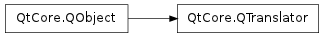

QTranslator ¶

Detailed Description ¶
The PySide.QtCore.QTranslator class provides internationalization support for text output.
An object of this class contains a set of translations from a source language to a target language. PySide.QtCore.QTranslator provides functions to look up translations in a translation file. Translation files are created using Qt Linguist .
The most common use of PySide.QtCore.QTranslator is to: load a translation file, install it using QApplication.installTranslator() , and use it via QObject.tr() . Here’s the main() function from the Hello tr() example:
def main ( args ): app = QApplication ( args ) translator = QTranslator () translator . load ( "hellotr_la" ) app . installTranslator ( translator ) hello = QPushButton ( QPushButton . tr ( "Hello world!" )) hello . resize ( 100 , 30 ) hello . show () return app . exec_ ()Note that the translator must be created before the application’s widgets.
Most applications will never need to do anything else with this class. The other functions provided by this class are useful for applications that work on translator files.
Looking up Translations ¶
It is possible to look up a translation using PySide.QtCore.QTranslator.translate() (as tr() and QApplication.translate() do). The PySide.QtCore.QTranslator.translate() function takes up to three parameters:
- The context - usually the class name for the tr() caller.
- The source text - usually the argument to tr() .
- The disambiguation - an optional string that helps disambiguate different uses of the same text in the same context.
For example, the “Cancel” in a dialog might have “Anuluj” when the program runs in Polish (in this case the source text would be “Cancel”). The context would (normally) be the dialog’s class name; there would normally be no comment, and the translated text would be “Anuluj”.
But it’s not always so simple. The Spanish version of a printer dialog with settings for two-sided printing and binding would probably require both “Activado” and “Activada” as translations for “Enabled”. In this case the source text would be “Enabled” in both cases, and the context would be the dialog’s class name, but the two items would have disambiguations such as “two-sided printing” for one and “binding” for the other. The disambiguation enables the translator to choose the appropriate gender for the Spanish version, and enables Qt to distinguish between translations.
Using Multiple Translations ¶
Multiple translation files can be installed in an application. Translations are searched for in the reverse order in which they were installed, so the most recently installed translation file is searched for translations first and the earliest translation file is searched last. The search stops as soon as a translation containing a matching string is found.
This mechanism makes it possible for a specific translation to be “selected” or given priority over the others; simply uninstall the translator from the application by passing it to the QApplication.removeTranslator() function and reinstall it with QApplication.installTranslator() . It will then be the first translation to be searched for matching strings.
See also
QApplication.installTranslator() QApplication.removeTranslator() QObject.tr() QApplication.translate() I18N Example Hello tr() Example Arrow Pad Example Troll Print Example
- class PySide.QtCore. QTranslator ( [ parent=None ] ) ¶
-
Parameters: parent – PySide.QtCore.QObject Constructs an empty message file object with parent parent that is not connected to any file.
- PySide.QtCore.QTranslator. isEmpty ( ) ¶
-
Return type: PySide.QtCore.bool Returns true if this translator is empty, otherwise returns false. This function works with stripped and unstripped translation files.
- PySide.QtCore.QTranslator. load ( data ) ¶
-
Parameters: data – PySide.QtCore.uchar Return type: PySide.QtCore.bool This function overloads PySide.QtCore.QTranslator.load() .
Loads the QM file data data of length len into the translator.
The data is not copied. The caller must be able to guarantee that data will not be deleted or modified.
- PySide.QtCore.QTranslator. load ( filename [ , directory="" [ , search_delimiters="" [ , suffix="" ] ] ] )
-
Parameters: - filename – unicode
- directory – unicode
- search_delimiters – unicode
- suffix – unicode
Return type: PySide.QtCore.bool
Loads filename + suffix (”.qm” if the suffix is not specified), which may be an absolute file name or relative to directory . Returns true if the translation is successfully loaded; otherwise returns false.
The previous contents of this translator object are discarded.
If the file name does not exist, other file names are tried in the following order:
For example, an application running in the fr_CA locale (French-speaking Canada) might call load(“foo.fr_ca”, “/opt/foolib”). PySide.QtCore.QTranslator.load() would then try to open the first existing readable file from this list:
- PySide.QtCore.QTranslator. translate ( context , sourceText [ , disambiguation=0 ] ) ¶
-
Parameters: - context – str
- sourceText – str
- disambiguation – str
Return type: unicode
Returns the translation for the key ( context , sourceText , disambiguation ). If none is found, also tries ( context , sourceText , “”). If that still fails, returns an empty string.
If you need to programatically insert translations in to a PySide.QtCore.QTranslator , this function can be reimplemented.
See also
- PySide.QtCore.QTranslator. translate ( context , sourceText , disambiguation , n )
-
Parameters: - context – str
- sourceText – str
- disambiguation – str
- n – PySide.QtCore.int
Return type: unicode
This function overloads PySide.QtCore.QTranslator.translate() .
Returns the translation for the key ( context , sourceText , disambiguation ). If none is found, also tries ( context , sourceText , “”). If that still fails, returns an empty string.
If n is not -1, it is used to choose an appropriate form for the translation (e.g. “%n file found” vs. “%n files found”).
See also